01
BUSINESS QUESTION
品牌预算应该投给谁、投什么内容、承担多少波动风险？
项目在缺少 GMV 与完整转化链路数据的条件下，使用互动量、爆文率、CPE、达人层级、内容模块、媒介形式、商业内容占比等平台指标构建代理评估体系，为前期投放策略提供决策支持。
GRADUATION PROJECT
基于新红平台数据，将品牌投放中的预算分配、内容结构优化和达人预筛选转化为可量化的数据分析问题，并用 RapidMiner 搭建完整的数据清洗、特征构建、可视化与预测建模流程。
BUSINESS QUESTION
项目在缺少 GMV 与完整转化链路数据的条件下，使用互动量、爆文率、CPE、达人层级、内容模块、媒介形式、商业内容占比等平台指标构建代理评估体系，为前期投放策略提供决策支持。
FRAMEWORK
答辩框架将研究拆成四个模块：预算效率、内容结构、病毒传播稳定性、预测建模与达人筛选。每个模块先回答一个业务问题，再落到数据指标和 RapidMiner 流程。
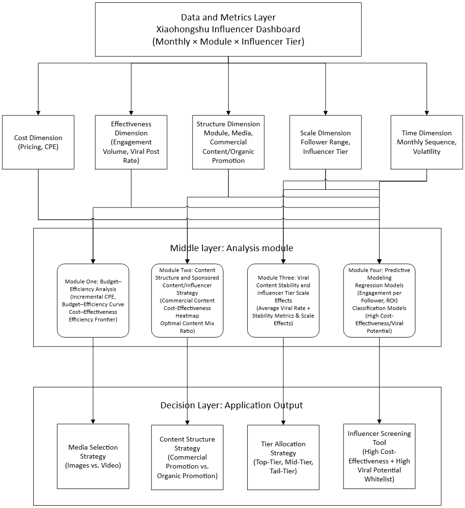
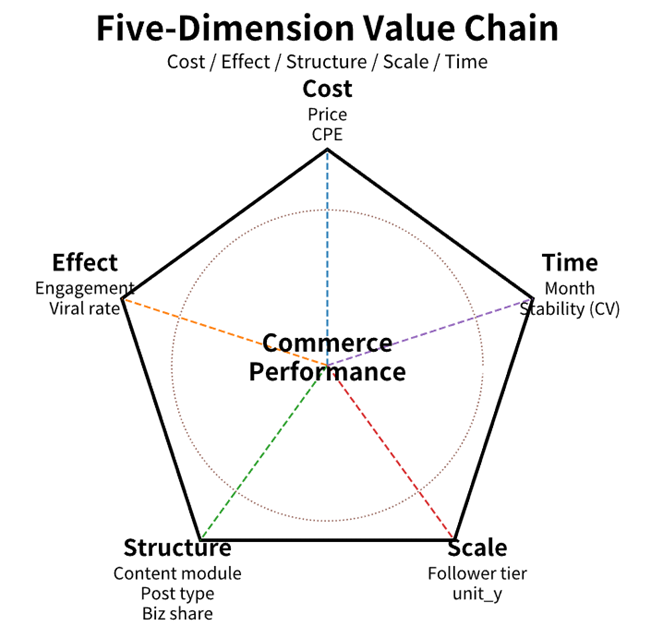
MODULE 1
将图文帖向视频帖的转变视为增量投资，计算额外成本、额外互动量以及增量 CPE（单次互动成本）。随后将单元按效果从优到劣排序，绘制累计成本收益曲线。主要发现：在许多模块/层级案例中，视频并非单纯增加成本。某些情况下，它能在降低成本的同时提升互动效果。
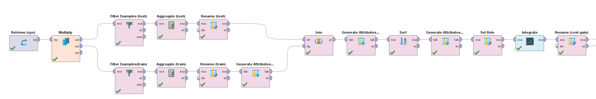
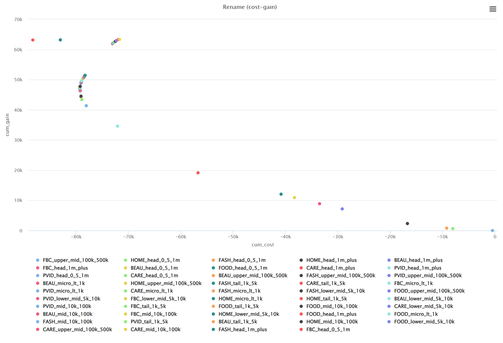
MODULE 2
热力图用于比较商业内容与自然推荐内容在互动、CPE 和爆文潜力上的相对表现；商业占比曲线进一步回答“商业内容比例多少更合适”。
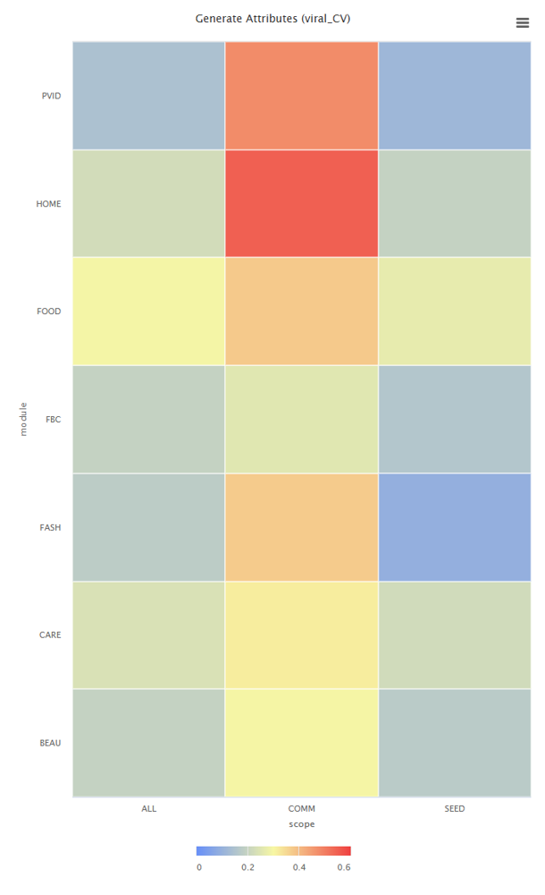
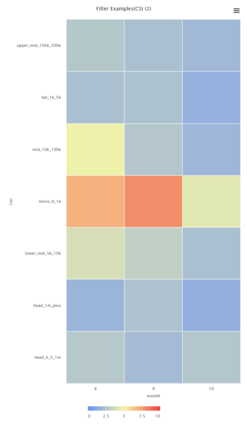
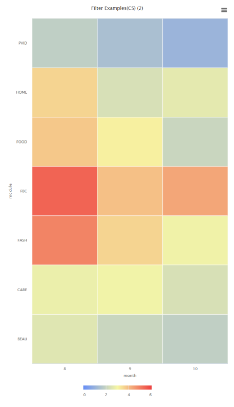
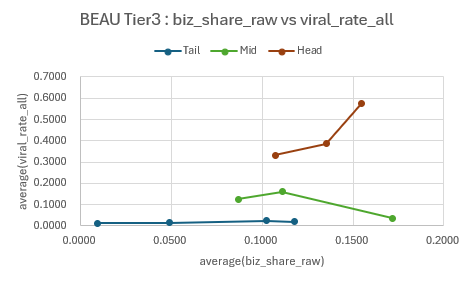
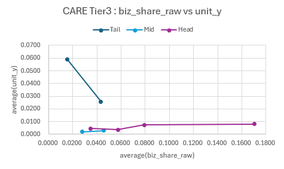
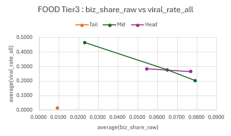
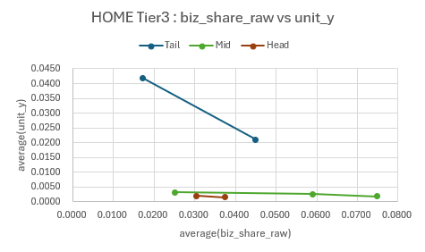
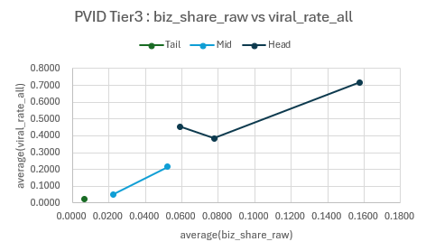
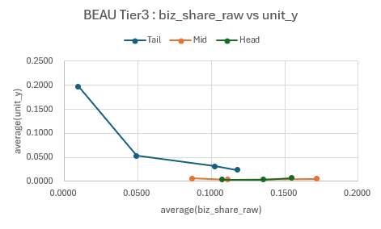
MODULE 3
这三张散点图更直观地展现了风险-收益空间。横轴代表平均病毒传播率，纵轴表示波动率，气泡大小对应发帖量。最佳区域位于右下角，意味着高回报且低波动性。这些可视化图表让我能在同一框架内比较不同模块、创作者层级和内容范围。
从实际业务角度可以这样理解：低波动性更适合持续性活动、稳定的预算分配以及对风险敏感的品牌合作。相反，高变异系数 CV 表明内容更容易受趋势、主题和临时事件影响。因此，这类内容更适用于测试性活动、爆发式推广和短期促销，而非作为高度稳定的基准配置。
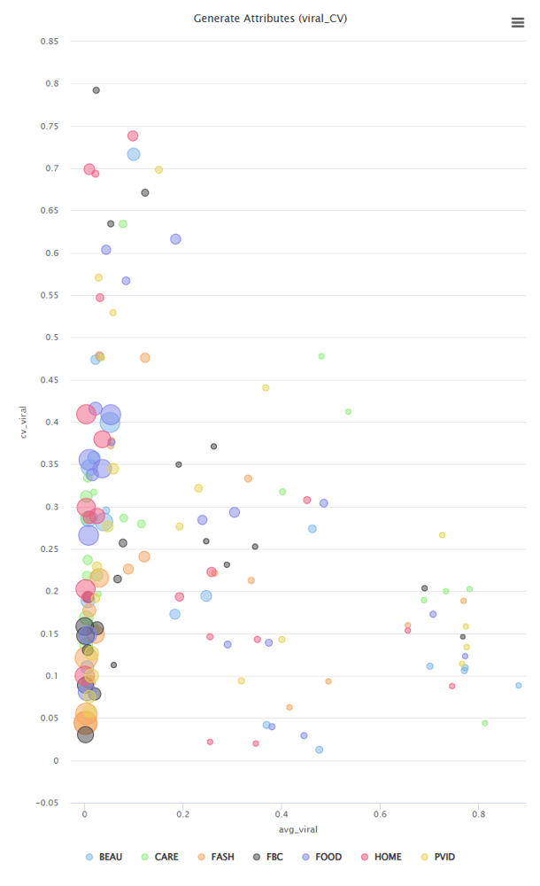
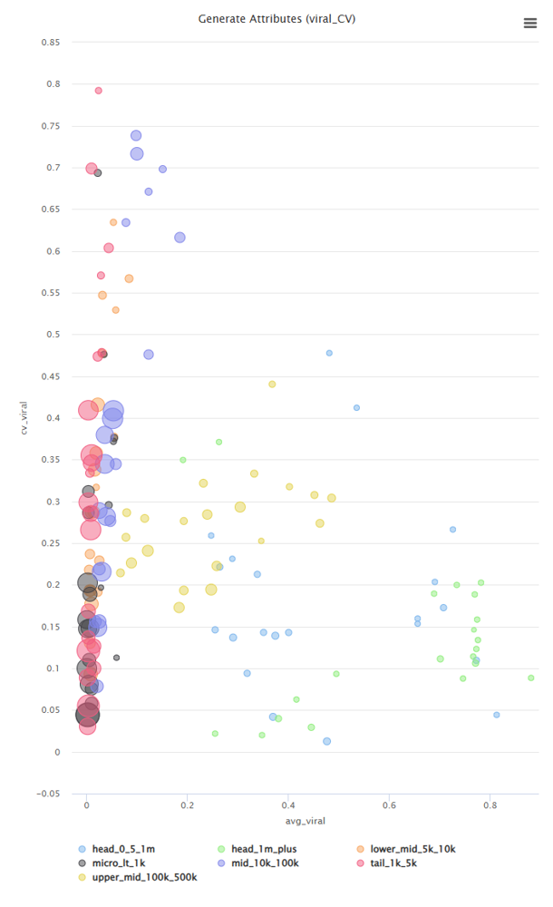
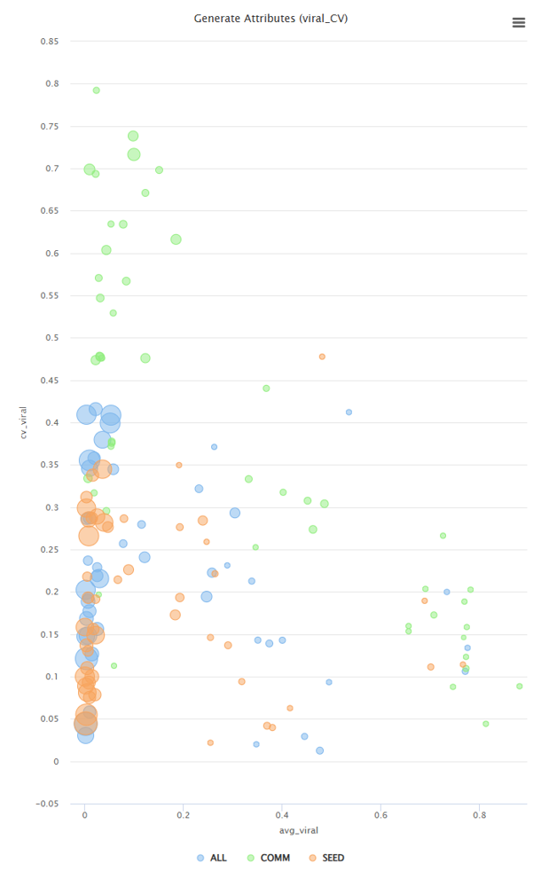
MODULE 4
预测部分从回归走向分类：先预测单位粉丝互动和代理 ROI，再把问题转化为“是否进入高价值候选池”“是否具备高爆文潜力”的筛选任务。
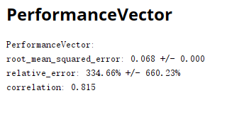

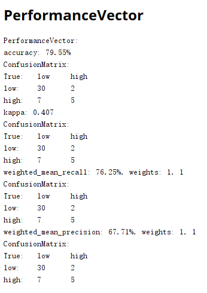
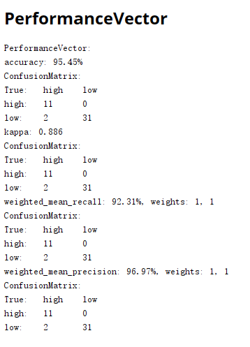
HR TAKEAWAY
该项目体现了我从业务问题拆解、指标体系设计、数据清洗聚合、可视化分析、机器学习建模、模型评估到管理建议输出的完整实践能力。对于银行金融科技岗位，这些能力可迁移到客户运营分析、风控辅助筛选、投放/渠道效率评估、数据看板与数字化决策支持。